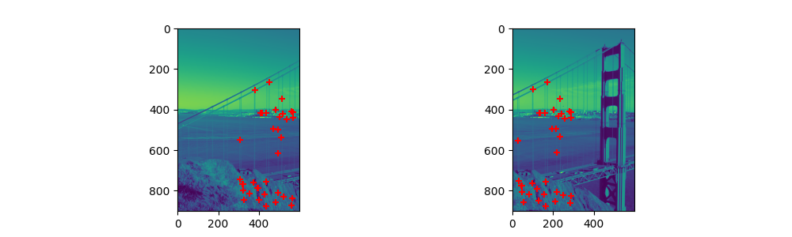
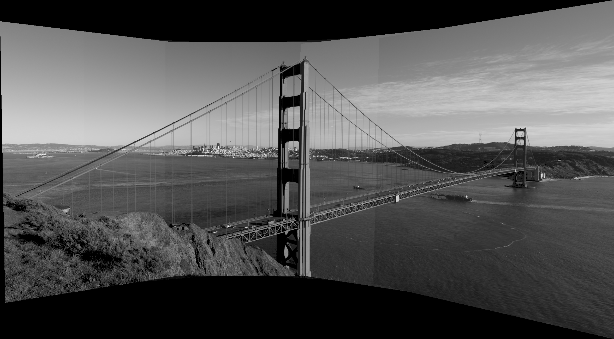

Dans un premier, la méthode présentée récupère les coordonnées des 4 coins de l'image dans le plan de destination de l'homographie. Ceci permet de définir la taille du canva de notre image résultante. À ce moment, nous récupérons les positions minimum de l'image en x et en y pour définir la translation nécessaire pour que notre image soit centrée sur le canva d'arriver. Cela fait, nous appliquons l'homographie inverse (du canva vers l'image d'origine) afin de connaître la position de chaque pixel du canva dans l'image d'origine et d'en interpoler la couleur.
pouliot_h1
pouliot_h2
En se basant sur le système de sélectioin de point du tp2, nous pouvons sélectionner des points sur les images. Ces points sont normalisés par norm_pts et nous en récupérons une matrice de normalisation T. À partir de ces points, nous estimons la matrice d'homographie H avec estim_H. Les points en entrée étant normalisés, H l'est aussi. Nous utilisons ainsi nos matrices T1 et T2 afin de récupérer la vraie matrice : inv(T2) @ H_norm @T1. Ceci fait, nous utilisons appliqueTransformations programmé lors du Réchauffement pour obtenir nos images transformées. Les images transformées ainsi que l'image de référence sont ensuite envoyées à getmosaique se chargeant de réaliser la mosaïque d'images. Les images dans le canva de la mosaïque sont placé en fonction des translations évoquées dans la partie Réchauffement. Ces translations permettent de placer les images en fonction de celle de référence.
images transformées Série 1
Mosaïque série 1
Les transformations sont bonnes. La mosaïque, quant à elle, est partiellement réussie. En effet, nous remarquons que les objets présents sur les trois images ne sont pas bien alignés (le lampadaire). Cela créant un dédoublement ou encore un flou. Ce dernier est sans doute dû à la moyenne utilisée pour la création de la mosaïque lorsque les pixels ne sont pas à 0. Le défaut d'alignement peut quant à lui avoir deux causes : Une estimation pas assez robuste de H. Peut-être qu'en prenant plus de points pour l'estimation de H, le décalage serait moins marqué. L'autre cause serait un défaut dans l'alignement lors de la construction de la mosaïque.
Points sélectionnés entre les images
images transformées Série 2
Mosaïque série 2
Nous observons une réelle correction de l'alignement et lors de la production de l'image, nous avons noté que l'utilisation de plus de points a permis d'avoir un résultat bien plus propre.
Points sélectionnés entre les images
images transformées Série 3
Mosaïque série 3
Sur ce panorama, il a été testé de prendre des points identiques pour les trois images. Ainsi certains points permettant de faire l'homographie de 1 à 2 se retrouvent dans les points pour la transformation de 3 à 2. Le résultat est très satisfaisant, l'alignement est quasi parfait. On note toutefois qu'on remarque une discontinuité entre les images. Cela est dû au fait que plusieurs images se superposent.
La partie automatique repose sur l'utilisation d'un détecteur de coins aussi appelé détecteur de Harris. Cependant, ce détecteur nous ressort beaucoup de points et notamment certains peu utile. Dès lors, en se basant sur la force de chaque coin aussi renvoyé par le détecteur, nous utilisons une méthode adaptive non-maximal suppression. Cette dernière permet de ne garder que les coins étant des maximums locaux en termes de force. L'avantage de cette méthode est aussi d'avoir des coins bien répartit dans l'espace. À partir des points retenus, nous récupérons des descripteurs normalisés de taille 8x8. Il a été choisi d'ignorer les coins trop proches des bords. En utilisant la SDC, nous déterminons quels descripteurs matchent entre deux images voisines. Ensuite, nous utilisons l'algorithme RANSAC pour piger au hasard 4 coins matchés juste avant pour estimer une matrice H. Nous faisons cela plusieurs fois puis gardons la matrice offrant le plus de correspondances et nous nous servons de ces dernières pour calculer la matrice H finale. Une fois que nous avons les matrices de passage d'une image à l'autre, nous créons les matrices H composé pour passer d'une image à celle de référence puis appliquons ces H. Nous calculons alors la mosaïque.
Points sélectionnés entre les images
images transformées
Mosaïque
Le résultat obtenu est très satisfaisant. On ne note que très peu d'élément mal aligné dans la mosaïque. De plus, on remarque qu'il y a beaucoup de points bien appariés. Ce dernier élément a notamment permis d'avoir beaucoup de points pour l'estimation final de H, rendant la transformation que meilleur. On notera tout de même que les limites entre les images restent visibles. Ceci peut notamment être dû au fait que ces zones regroupent superposent plusieurs images. De plus, ce résultat montre l'efficacité des modifications de getmosaique concernant le placement des images dans le canva. En effet, précédemment, l'image de référence était placée au centre du canva, mais à présent nous nous basons sur les différentes translations pour bien positionner notre image.
Points sélectionnés entre les images


images transformées
Mosaïque

Les résultats sont une nouvelle fois très bons. Notamment, si nous comparons à la transformation manuelle, l'alignement des images est bien meilleur. Beaucoup plus de points ont été sélectionnée pour la transformation et le changement de la méthode d'alignement au sein de getmosaique fait ses preuves. Toutefois, on note que la dernière image est très étirée. Il est possible que l'image d'origine soit très éloigné de celle qui la précède et que donc les points de correspondances soit tous proches de la gauche. Cette dernière image est aussi un peu flou par endroit, ce qui est causé par l'étirement extrême. Le résultat illustre aussi le bon fonctionnement de nos fonctions en couleurs.
Pour cette série, il a été choisi de traiter les images en ligne. Nous faisons donc toute notre démarche sur les images du haut puis du bas pour avoir deux mosaïques. Ensuite, nous traitons les deux mosaïques comme des images pour n'en former qu'une.
Points sélectionnés entre les images du haut
Points sélectionnés entre les images du bas
images transformées haut
images transformées bas
Mosaïque haut
Mosaïque bas
Points sélectionnés entre les mosaïques
mosaïques transformées
Mosaïque finale

Les mosaïques intermédiaires sont de très bonnes qualités. Là où on aurait pu redouter que notre algorithme trouve des points de correspondances entre les mosaïques autour de l'image d'intérêt, il n'en est rien et le résultat global est aussi très propre. Cependant le canva autour est trop grand par rapport à l'image. Cela est dû à une mauvaise gestion du cas où deux images sont alignées l'une sous l'autre comme ici. De plus, nous percevons sous le panorama des pixels gris. Ces derniers sont le fruit de l'interpolation des valeurs des pixels lors l'application de H sur la mosaïque basse.
Les résultats sont globalement très satisfaisants. Il serait intéressant de trouver une solution afin de ne plus avoir de discontinuité d'intensité au sein de la mosaïque, possiblement en normalisant cette dernière sur l'image. De plus, la gestion de la création du canva pour la mosaïque n'est pas parfait comme le laisse voir le dernier exemple. Un travail est à faire dans ce sens. Enfin, on notera que le programme dans son ensemble est assez rapide. Cela est dû à l'utilisation de matrices à différentes étapes du processus comme lors du matching de descripteurs ce qui permet d'éviter de longue boucle for.